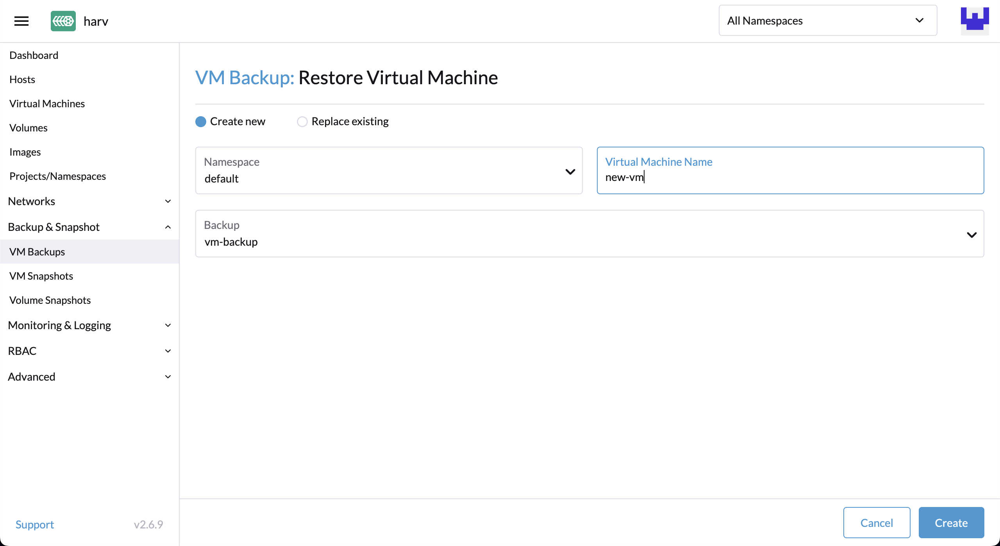
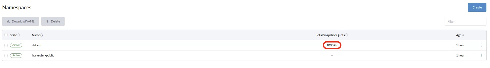
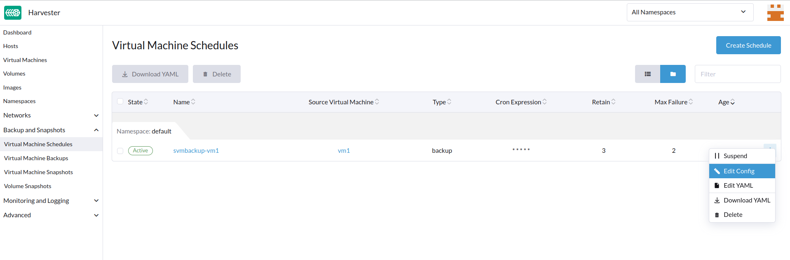

|
Este documento ha sido traducido utilizando tecnología de traducción automática. Si bien nos esforzamos por proporcionar traducciones precisas, no ofrecemos garantías sobre la integridad, precisión o confiabilidad del contenido traducido. En caso de discrepancia, la versión original en inglés prevalecerá y constituirá el texto autorizado. |
Copia de seguridad, instantánea y restauración de máquinas virtuales
Copia de seguridad y restauración de máquinas virtuales
Las copias de seguridad de máquinas virtuales se crean desde la página de Máquinas Virtuales. Los volúmenes de copia de seguridad de la máquina virtual se almacenarán en el Destino de Copia de Seguridad (un servidor NFS o S3), y se pueden utilizar para restaurar una nueva máquina virtual o reemplazar una máquina virtual existente.

|
Se debe configurar un destino de copia de seguridad. Para obtener más información, consulte el [Configure Backup Target]. Si no se establece un destino de copia de seguridad, se mostrará un mensaje que te solicita configurarlo. El soporte de copia de seguridad está actualmente limitado a SUSE Storage volúmenes. SUSE Virtualization no puede crear copias de seguridad de volúmenes en almacenamiento externo. |
Configurar Destino de Copia de Seguridad
Un destino de copia de seguridad es un punto final utilizado para acceder a un almacén de copias de seguridad en SUSE Virtualization. Un almacén de copias de seguridad es un servidor NFS o un servidor compatible con S3 que almacena las copias de seguridad de los volúmenes de máquinas virtuales. El destino de copia de seguridad se puede establecer en Settings > backup-target.
La siguiente tabla describe los parámetros comunes a todos los destinos de copia de seguridad.
| Parámetro | Tipo | Descripción |
|---|---|---|
|
cadena |
Tipo de servidor que almacena las copias de seguridad de los volúmenes utilizados por las máquinas virtuales. Puedes seleccionar |
|
entero |
Número de segundos que SUSE Virtualization espera antes de sincronizar las copias de seguridad con el almacén de copias de seguridad. Cuando el valor es |
-
S3
-
NFS
| Parámetro | Tipo | Descripción |
|---|---|---|
|
cadena |
(Opcional) Nombre de host o dirección IP del punto final utilizado para acceder al servidor S3 |
|
cadena |
Nombre del bucket S3 |
|
cadena |
Región de AWS en la que se creó el bucket S3 |
|
cadena |
Primera parte de la clave de acceso que utilizas para autenticar las solicitudes a los servicios de AWS (por ejemplo, |
|
cadena |
Segunda parte de la clave de acceso que utilizas para autenticar solicitudes a los servicios de AWS (por ejemplo, |
Certificado |
cadena |
Certificado SSL autofirmado del servidor S3 |
VirtualHostedStyle |
boolean |
Opción para utilizar URLs de estilo virtual-hosted, donde el nombre del bucket es parte del nombre de dominio en la URL ( |
| Parámetro | Tipo | Descripción |
|---|---|---|
Puesto final |
cadena |
URL del servidor NFS |
Crear una copia de seguridad de la máquina virtual
-
Una vez que se establece el destino de la copia de seguridad, ve a la página
Virtual Machines. -
Haz clic en
Take Backupde las acciones de la máquina virtual para crear una nueva copia de seguridad de la máquina virtual. -
Establece un nombre de copia de seguridad personalizado y haz clic en
Createpara crear una nueva copia de seguridad de la máquina virtual.
Resultado: La copia de seguridad se crea. Recibirás un mensaje de notificación, y también puedes ir a la página Backup & Snapshot > VM Backups para ver todas las copias de seguridad de las máquinas virtuales.
El State se establecerá en Ready una vez que la copia de seguridad esté completa.

Los usuarios pueden restaurar una nueva máquina virtual o reemplazar una máquina virtual existente utilizando esta copia de seguridad.
|
La configuración de red de una máquina virtual que ejecuta una versión de Ubuntu posterior a 16.04 es probable que sea gestionada por La máquina virtual restaurada conserva el ID de máquina de la máquina virtual original. Si no se especifica |
|
A partir de la versión v1.7.0, SUSE Virtualization admite copias de seguridad y instantáneas para volúmenes del motor de datos Longhorn V2. Sin embargo, eliminar la última copia de seguridad de una máquina virtual o habilitar la configuración SUSE Storage Auto Cleanup Snapshot When Delete Backup bloquea todas las operaciones subsiguientes en los volúmenes relacionados. Este es un problema conocido que afecta a operaciones como instantáneas de volumen, copias de seguridad y migración en vivo. Actualmente no hay ninguna solución viable disponible. Resolver el estado bloqueado requiere eliminar el volumen afectado para restaurar la funcionalidad de Longhorn Manager. |
Restaura una nueva máquina virtual utilizando una copia de seguridad.
-
Ve a la página
VM Backups. -
Haz clic en el botón
Restore Backupen la parte superior derecha. -
Especifica el nuevo nombre de la máquina virtual y haz clic en
Create. -
Se restaurará una nueva máquina virtual utilizando los volúmenes de copia de seguridad y los metadatos, y podrás acceder a ella desde la página
Virtual Machines.
Reemplaza una máquina virtual existente utilizando una copia de seguridad.
Puedes reemplazar una máquina virtual existente utilizando la copia de seguridad con el mismo destino de copia de seguridad de la máquina virtual.
Puedes elegir eliminar o conservar los volúmenes anteriores. Por defecto, se eliminan todos los volúmenes anteriores.
Requisitos: La máquina virtual debe existir y debe estar apagada.
-
Ve a la página
VM Backups. -
Haz clic en el botón
Restore Backupen la parte superior derecha. -
Haga clic en
Replace Existing. -
Puedes ver el proceso de restauración desde la página
Virtual Machines.
Restaura una nueva máquina virtual en otro clúster SUSE Virtualization.
Los usuarios ahora pueden restaurar una nueva máquina virtual en otro clúster aprovechando la función de copia de seguridad de metadatos y contenido de la máquina virtual.
Requisitos previos
-
v1.4.0 y posteriores: El controlador sincroniza automáticamente las imágenes de la máquina virtual con el nuevo clúster, excepto cuando ya existe una imagen de máquina virtual con el mismo nombre o nombre de visualización en el nuevo clúster.
-
Anterior a v1.4.0: Debes subir y configurar las imágenes de la máquina virtual en el nuevo clúster. Asegúrate de que los nombres de las imágenes y la configuración sean idénticos para que las máquinas virtuales puedan ser restauradas.
Sube las mismas imágenes de máquinas virtuales a un nuevo clúster.
-
Descarga la imagen de la máquina virtual del clúster existente.

-
Descomprime la imagen descargada.
$ gzip -d <image.gz>
-
Aloja la imagen en un servidor que sea accesible para el nuevo clúster.
Ejemplo (servidor HTTP simple):
$ python -m http.server
-
Verifica el nombre de la imagen existente (normalmente comienza con
image-) y crea la misma en el nuevo clúster.$ kubectl get vmimages -A NAMESPACE NAME DISPLAY-NAME SIZE AGE default image-79hdq focal-server-cloudimg-amd64.img 566886400 5h36m default image-l7924 harvester-v1.0.0-rc2-amd64.iso 3964551168 137m default image-lvqxn opensuse-leap-15.3.x86_64-nocloud.qcow2 568524800 5h35m -
Aplica un YAML de
VirtualMachineImagecon el mismo nombre y configuración en el nuevo clúster.Ejemplo:
$ cat <<EOF | kubectl apply -f - apiVersion: harvesterhci.io/v1beta1 kind: VirtualMachineImage metadata: name: image-79hdq namespace: default spec: displayName: focal-server-cloudimg-amd64.img pvcName: "" pvcNamespace: "" sourceType: download url: https://<server-ip-to-host-image>:8000/<image-name> EOF
SUSE Virtualization puede restaurar máquinas virtuales solo si el nombre de la imagen y la configuración en ambos clústeres, el antiguo y el nuevo, son idénticos.
Restaura una nueva máquina virtual en un nuevo clúster.
-
Configura el mismo destino de copia de seguridad en un nuevo clúster. Y el controlador de copia de seguridad sincronizará automáticamente los metadatos de copia de seguridad con el nuevo clúster.
-
Ve a la página
VM Backups. -
Selecciona los metadatos de copia de seguridad de la máquina virtual sincronizados y elige restaurar una nueva máquina virtual con un nombre de máquina virtual especificado.
-
Se restaurará una nueva máquina virtual utilizando los volúmenes y metadatos de copia de seguridad. Puedes acceder a ella desde la página
Virtual Machines.
Instantánea y Restauración de Máquina Virtual
Las instantáneas de máquinas virtuales se crean desde la página Máquinas Virtuales. Los volúmenes de instantáneas de la máquina virtual se almacenarán en el clúster y se pueden utilizar para restaurar una nueva máquina virtual o reemplazar una máquina virtual existente.

Crea una Instantánea de Máquina Virtual
-
Ve a la página
Virtual Machines. -
Haz clic en
Take VM Snapshotde las acciones de la VM para crear una nueva instantánea de máquina virtual. -
Establece un nombre de instantánea personalizado y haz clic en
Createpara crear una nueva instantánea de máquina virtual.
Resultado: La instantánea se ha creado. También puedes ir a la página Backup & Snapshot > virtual machine Snapshots para ver todas las instantáneas de máquinas virtuales.
El State se establecerá en Ready una vez que la instantánea esté completa.

Los usuarios pueden restaurar una nueva máquina virtual o reemplazar una máquina virtual existente utilizando esta instantánea.
|
La configuración de red de una máquina virtual que ejecuta una versión de Ubuntu posterior a 16.04 es probable que sea gestionada por La máquina virtual restaurada conserva el ID de máquina de la máquina virtual original. Si no se especifica |
|
A partir de la versión v1.7.0, SUSE Virtualization admite copias de seguridad y instantáneas para volúmenes del motor de datos Longhorn V2. Sin embargo, eliminar la última copia de seguridad de una máquina virtual bloquea todas las operaciones subsiguientes en los volúmenes relacionados. Este es un problema conocido que afecta a operaciones como instantáneas de volúmenes, copias de seguridad y migración en vivo. Actualmente no hay ninguna solución viable disponible. Resolver el estado bloqueado requiere eliminar el volumen afectado para restaurar la funcionalidad del Longhorn Manager. |
Restaura una nueva máquina virtual utilizando una instantánea.
-
Ve a la página
VM Snapshots. -
Haz clic en el botón
Restore Snapshoten la parte superior derecha. -
Especifica el nuevo nombre de la máquina virtual y haz clic en
Create. -
Se restaurará una nueva máquina virtual utilizando los volúmenes y metadatos de la instantánea, y podrás acceder a ella desde la página
Virtual Machines.
Reemplaza una máquina virtual existente utilizando una instantánea.
Puedes reemplazar una máquina virtual existente utilizando la instantánea.
|
Solo puedes optar por conservar los volúmenes anteriores. |
-
Ve a la página
VM Snapshots. -
Haz clic en el botón
Restore Snapshoten la parte superior derecha. -
Haga clic en
Replace Existing. -
Puedes ver el proceso de restauración desde la página
Virtual Machines.
Gestión del Espacio de Instantáneas de Máquinas Virtuales
Los volúmenes consumen espacio adicional en disco en el clúster cada vez que creas una nueva copia de seguridad o instantánea de máquina virtual. Para gestionar esto, puedes configurar límites de uso de espacio a nivel de espacio de nombres y de máquina virtual. Los valores configurados representan la cantidad máxima de espacio en disco que puede ser utilizado por todas las copias de seguridad e instantáneas. No se establecen límites por defecto.
Configura el Límite de Uso de Espacio de Instantáneas a Nivel de Espacio de Nombres.
-
Ve a la pantalla Espacios de Nombres.
-
Localiza el espacio de nombres objetivo y luego selecciona ⋮ → Editar Cuota.

-
Especifica la cantidad máxima de espacio en disco que puede ser consumido por todas las instantáneas en el espacio de nombres, y luego haz clic en Guardar.

-
Verifica que el valor configurado se muestre en la pantalla de Espacios de Nombres.

Configura el Límite de Uso de Espacio de Instantáneas a Nivel de Máquina Virtual.
-
Ve a la pantalla de Máquinas Virtuales.
-
Localiza la máquina virtual objetivo y luego selecciona ⋮ → Editar Cuota de VM.

-
Especifica la cantidad total máxima de espacio en disco que puede ser consumido por todas las instantáneas para la máquina virtual, y luego haz clic en Guardar.

-
Verifica que el valor configurado se muestre en la pestaña de Cuotas de la pantalla de detalles de la máquina virtual.

Congelación del sistema de archivos para copias de seguridad y instantáneas de máquinas virtuales.
Cuando una máquina virtual invitada está conectada con el Agente Invitado QEMU, el SUSE Virtualization controlador realiza operaciones de congelación del sistema de archivos a través de la aplicación virt-freezer de Kubevirt para garantizar la consistencia del sistema de archivos durante las copias de seguridad y las instantáneas de la máquina virtual.
Esta función es particularmente valiosa para máquinas virtuales con alta actividad de E/S o datos críticos que requieren garantías de consistencia en un momento específico.
Requisitos previos
La funcionalidad de congelación y descongelación del sistema de archivos depende de la configuración de la máquina virtual, que no está controlada por SUSE Virtualization. Debes asegurarte de que las máquinas virtuales estén configuradas correctamente y soporten los comandos de libvirt requeridos.
-
Red Hat Enterprise Linux (RHEL) y SUSE Linux Enterprise (SLE) Micro: Estos sistemas pueden carecer de permisos suficientes para las operaciones de congelación del sistema de archivos por defecto. Es posible que debas crear políticas SELinux personalizadas.
-
Windows: Las operaciones de congelación del sistema de archivos están disponibles en estos sistemas solo cuando el servicio de Volume Shadow Copy Service (VSS) está habilitado.
|
Cuando se activa la aplicación virt-freezer, KubeVirt se comunica con el Agente Invitado QEMU para traducir llamadas específicas del sistema operativo. Los sistemas Linux utilizan llamadas al sistema fsfreeze, mientras que los sistemas Windows utilizan APIs de VSS. |
Verificando la compatibilidad de congelación del sistema de archivos
Para verificar que tu máquina virtual admite operaciones de congelación del sistema de archivos, realiza los siguientes pasos:
-
Accede al contenedor virt-launcher
computede la máquina virtual.POD=$(kubectl get pods -n default \ -l vm.kubevirt.io/name=vm1 \ -o jsonpath='{.items[0].metadata.name}') kubectl exec -it $POD -n default -c compute -- bash -
Intenta congelar el sistema de archivos utilizando la aplicación virt-freezer, que está disponible en el contenedor
compute:virt-freezer --freeze --namespace <VM namespace> --name <VM name> -
Verifica el resultado de la operación de congelación.
No omitas este paso. Además, debes descongelar los sistemas de archivos de la máquina virtual antes de realizar cualquier otra operación.
Resolución de problemas de congelación del sistema de archivos
Error de congelación del sistema de archivos debido a permisos insuficientes
Un error Failed to freeze filesystem puede causar fallos en las copias de seguridad o en las instantáneas en algunas distribuciones de Linux.
Este problema suele ocurrir cuando SELinux deniega el acceso de lectura al Agente Invitado de QEMU (qemu-ga). Puedes verificar la causa utilizando los siguientes pasos:
-
[Verifica que tu máquina virtual admite operaciones de congelación del sistema de archivos](#verifying-filesystem-freeze-compatibility).
-
Busca errores
Permission deniedde SELinux en los registros del sistema.Si ves un mensaje similar al siguiente, SELinux está bloqueando el acceso requerido:
{"component":"freezer","level":"error","msg":"Freezing VMI failed","reason":"server error. command Freeze failed: \"LibvirtError(Code=1, Domain=10, Message='internal error: unable to execute QEMU agent command 'guest-fsfreeze-freeze': failed to open /data: Permission denied')\""}
Para resolver el problema, debes crear e instalar un módulo de política SELinux personalizado. Esta solución ha sido verificada para funcionar con RHEL y SLE Micro.
|
Usar |
-
Genera un módulo de política SELinux personalizado a partir de los registros de auditoría.
grep qemu-ga /var/log/audit/audit.log | audit2allow -M my_qemu_ga -
Instala el módulo de política generado.
semodule -i my_qemu_ga.pp -
Repite los pasos 1 y 2 hasta que virt-freezer pueda congelar con éxito los sistemas de archivos.
Debes descongelar los sistemas de archivos de la máquina virtual antes de realizar otras operaciones.
virt-freezer --unfreeze --namespace <VM namespace> --name <VM name>
Copias de seguridad y instantáneas de máquinas virtuales programadas
SUSE Virtualization admite la creación de copias de seguridad e instantáneas de máquinas virtuales de forma programada, con la opción de conservar un número específico de copias de seguridad e instantáneas. Puedes suspender, reanudar y actualizar la programación en tiempo de ejecución.
Crea el programa de la máquina virtual
-
Ve a la pantalla Programas de Máquina Virtual, y luego haz clic en Crear programa.

-
Configure los ajustes siguientes:

-
Tipo: Selecciona Copia de seguridad o Instantánea.
-
Espacio de nombres y Nombre de la máquina virtual: Especifica el espacio de nombres y el nombre de la máquina virtual de origen.
-
Programación Cron: Especifica la expresión cron (una cadena que consiste en campos separados por caracteres de espacio en blanco) que define las propiedades del horario.
El intervalo de creación de copias de seguridad o instantáneas debe ser de al menos una hora. La eliminación frecuente de copias de seguridad o instantáneas resulta en una carga de E/S elevada.
Si dos programas tienen el mismo nivel de granularidad, el desfase de tiempo de cada iteración debe ser de al menos 10 minutos.
-
Retener: Especifica el número de copias de seguridad o instantáneas actualizadas que se deben conservar.
Cuando se excede este valor, el controlador SUSE Virtualization elimina las copias de seguridad o instantáneas más antiguas, y Longhorn inicia la purga de instantáneas.
-
Máx. fallos: Especifica el número máximo de intentos consecutivos fallidos de creación de copias de seguridad o instantáneas que se permitirán.
Cuando se excede este valor, el controlador SUSE Virtualization suspende el programa.
-
-
Haga clic en Crear.
Verifica el estado de un programa de máquina virtual
-
Ve a la pantalla de Programas de Máquina Virtual.
-
Localiza el programa objetivo y haz clic en el nombre para abrir la pantalla de detalles.
-
En la pestaña Básicos, verifica que la configuración sea correcta.

-
En la pestaña Copias de seguridad, verifica el estado de las copias de seguridad o instantáneas que se crearon según el programa.

Las copias de seguridad e instantáneas marcadas como Preparadas pueden usarse para restaurar la máquina virtual de origen. Para obtener más información, consulte la [Virtual Machine Backup & Restore] y la [Virtual Machine Snapshot & Restore].

Edita un programa de máquina virtual
-
Ve a la pantalla de Programas de Máquina Virtual.
-
Localiza el programa objetivo y selecciona ⋮ → Editar Config.

-
Edita los valores de Programación Cron, Retener o Máx. fallos.

-
Haz clic en Guardar para aplicar los cambios.
Suspender o Reanudar un Programa de Máquina Virtual
Puedes suspender programas activos y reanudar programas suspendidos.
-
Ve a la pantalla de Programas de Máquina Virtual.
-
Localiza el programa objetivo y selecciona ⋮ → Suspender o Reanudar.

El programa se suspende automáticamente cuando el número de intentos consecutivos fallidos de creación de copias de seguridad o instantáneas supera el valor de Máx. Fallos.
SUSE Virtualization no te permite reanudar un programa suspendido para la creación de copias de seguridad si el destino de la copia de seguridad no es accesible.
|
Si un horario fue suspendido automáticamente porque se superó el valor de Máx. fallo, debes reanudarlo explícitamente después de verificar que la copia de seguridad o la instantánea se puede crear con éxito. Por ejemplo, cuando el destino de la copia de seguridad se vuelve accesible nuevamente después de un período de desconexión, puedes crear primero una copia de seguridad manualmente y comprobar el resultado. |
Operaciones de máquinas virtuales y SUSE Virtualization actualizaciones
Antes de actualizar versión SUSE Virtualization, asegúrate de que no haya copias de seguridad o instantáneas de máquinas virtuales en uso y que todos los horarios de máquinas virtuales estén suspendidos. La interfaz de SUSE Virtualization muestra los siguientes mensajes de error cuando se rechazan los intentos de actualizar versión:
-
Se están creando, eliminando o utilizando copias de seguridad o instantáneas de máquinas virtuales durante el intento de actualizar versión

-
Los horarios de las máquinas virtuales están activos durante el intento de actualizar versión

Para evitar tales problemas, SUSE planea implementar la suspensión automática de todos los horarios de máquinas virtuales antes de que se inicie el proceso de actualización. Los horarios suspendidos también se reanudarán automáticamente después de que se complete la actualización. Para obtener más información, consulta Issue #6759.
|
SUSE Storage tiene una función similar llamada instantáneas y copias de seguridad recurrentes, que utiliza trabajos recurrentes para crear instantáneas o copias de seguridad periódicas de volúmenes SUSE Storage. Esta función no está integrada en SUSE Virtualization porque entra en conflicto con ciertas operaciones (por ejemplo, la conexión de máquinas virtuales y las actualizaciones de clústeres). Los trabajos de instantáneas y copias de seguridad recurrentes SUSE Storage también pueden generar una alta E/S sin el conocimiento de SUSE Virtualization, y en algunos casos, incluso desestabilizar el clúster. Para obtener los mejores resultados, utiliza la función copias de seguridad e instantáneas de máquinas virtuales programadas en SUSE Virtualization, que tiene mecanismos de salvaguarda que mitigan la alta E/S cuando es posible. Nuevamente, SUSE Virtualization no admite instantáneas y copias de seguridad recurrentes SUSE Storage. |